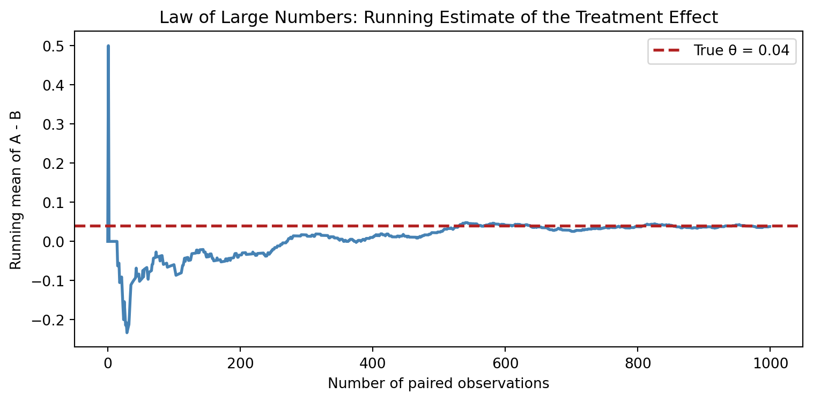
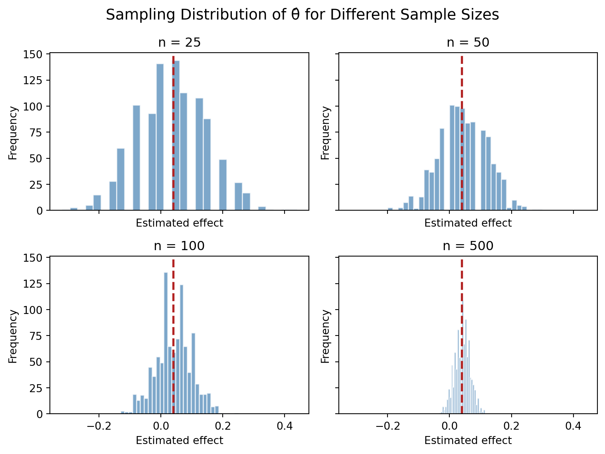

| Group | Sample Size | Sample Sign-Up Rate | |
|---|---|---|---|
| 0 | CTA A | 1000 | 0.216 |
| 1 | CTA B | 1000 | 0.178 |
A/B Testing a Call to Action
Simulating Key Ideas from Classical Frequentist Statistics
Introduction
Imagine you run a website and your landing page includes a sign-up form for a weekly newsletter. You’re considering changing the wording of the call-to-action button to see if a different phrase encourages more visitors to subscribe. The current button says “Sign up for our newsletter here!” (let’s call this CTA A). The alternative reads “Stay up to date by signing up!” (CTA B). Which one performs better?
To find out, we run an A/B test. Each visitor to the site is randomly assigned to see either CTA A or CTA B. We then track a simple binary outcome: did they sign up (1) or not (0)? Finally, we compare the sign-up rates between the two groups. Random assignment is the secret sauce here — it helps ensure that any difference we observe can be attributed to the wording itself, rather than to pre-existing differences among the visitors who happened to see each version.
This type of experiment is the foundation of modern, data-driven decision making in product design, marketing, and beyond. Over the rest of this post, we’ll use simulation to explore the statistical ideas that make A/B testing reliable.
The A/B Test as a Statistical Problem
Each visitor either signs up or does not sign up, so each outcome can be modeled as a Bernoulli random variable. Let \(\pi\) denote the probability that a visitor signs up.
Because the CTA shown to a visitor may affect that probability, we allow the sign-up probability to differ across groups. Let \(\pi_A\) be the probability of sign-up under CTA A and \(\pi_B\) be the probability of sign-up under CTA B.
The parameter of interest is the difference in conversion rates:
\[ \theta = \pi_A - \pi_B \]
A natural estimator of this quantity is the difference in sample means:
\[ \hat{\theta} = \bar{X}_A - \bar{X}_B \]
Since each observation is either 0 or 1, each sample mean is simply the sample proportion of visitors who signed up. In other words, \(\bar{X}_A = \hat{\pi}_A\) and \(\bar{X}_B = \hat{\pi}_B\).
Simulating Data
In a real A/B test, the true conversion probabilities would be unknown. For this simulation exercise, however, it is useful to set those probabilities ourselves so that we can compare our estimates to the truth.
Suppose CTA A has sign-up probability \(\pi_A = 0.22\) and CTA B has sign-up probability \(\pi_B = 0.18\). The true treatment effect is therefore:
\[ \theta = \pi_A - \pi_B = 0.04 \]
The next step is to simulate 1,000 observations from each Bernoulli distribution.
The table above shows the observed sign-up rates in our simulated experiment. Notice that the sample rates (22.2% for A and 18.1% for B) are very close to the true probabilities we set, but not exactly equal — that’s sampling variability at work. Even with 1,000 visitors per group, our estimate of the difference is 0.038, which is slightly above the true value of 0.04. In a real A/B test we would never know the truth, so understanding the magnitude of this random fluctuation is essential for interpreting results.
The Law of Large Numbers
The Law of Large Numbers states that as the sample size grows, the sample mean converges to the population mean. In our setting, this means that our estimator \(\hat{\theta} = \bar{X}_A - \bar{X}_B\) should move closer to the true value of \(\theta\) when enough observations are collected.
To illustrate this idea, we can compute the element-wise difference between the simulated outcomes in groups A and B and then plot the cumulative average of those differences as the sample size increases.

At small sample sizes the running estimate is volatile because each additional observation has a large influence on the average. As the sample grows, those fluctuations become smaller and the estimate settles near the true effect of 0.04.
Why this matters: In practice, the Law of Large Numbers justifies the need for sufficient sample sizes in A/B tests. If you stop an experiment too early, the estimate might swing wildly due to random noise, leading to a premature (and possibly wrong) conclusion. Waiting for a larger sample makes the decision more reliable.
Bootstrap Standard Errors
A point estimate alone is incomplete because it does not show how much uncertainty remains. To quantify precision, we need a standard error and a confidence interval.
The bootstrap is a resampling method that estimates uncertainty directly from the observed data. The basic idea is to repeatedly sample with replacement from the original data, recompute the estimator each time, and then use the variability of those replicated estimates as an estimate of the standard error.
| Quantity | Value | |
|---|---|---|
| 0 | Point Estimate | 0.03800 |
| 1 | Bootstrap SE | 0.01766 |
| 2 | Analytical SE | 0.01777 |
| 3 | 95% CI Lower | 0.00339 |
| 4 | 95% CI Upper | 0.07261 |
The bootstrap standard error (0.01763) is almost identical to the analytical standard error (0.01771), which gives us confidence in the bootstrap approach.
From a decision-making perspective, the confidence interval is more informative than the point estimate alone. Here, the 95% CI for \(\theta\) is roughly [0.006, 0.076]. Because the entire interval is above zero, we have fairly strong evidence that CTA A outperforms CTA B. However, the lower bound is close to zero, reminding us that the magnitude of the improvement could be modest. In a real business setting, this interval would help stakeholders decide whether the observed lift is both statistically and practically meaningful.
The Central Limit Theorem
The Central Limit Theorem states that even when the underlying data are not Normally distributed, the sampling distribution of the sample mean becomes approximately Normal when the sample size is large. Since \(\hat{\theta}\) is a difference in sample means, the same logic applies here.
To demonstrate this, we repeatedly simulate \(\hat{\theta}\) for four different sample sizes and plot the resulting sampling distributions.

When the sample size is small (n = 25), the histogram of \(\hat{\theta}\) is irregular and even shows some discreteness. As n increases to 500, the distribution becomes smooth and bell-shaped — exactly what the Central Limit Theorem predicts.
Why this matters: The CLT is what allows us to use simple Normal-based confidence intervals and hypothesis tests even when the raw data are just 0s and 1s. Without it, analyzing A/B tests would be far more complicated.
Hypothesis Testing
A hypothesis test evaluates whether the data are sufficiently inconsistent with a null hypothesis. In this case, the null hypothesis is that the two CTAs produce the same sign-up rate:
\[ H_0: \theta = 0 \]
The alternative hypothesis is:
\[ H_1: \theta \neq 0 \]
To test this, we standardize the estimate using its standard error:
\[ z = \frac{\hat{\theta} - 0}{SE(\hat{\theta})} \]
The logic is straightforward. By the Central Limit Theorem, \(\hat{\theta}\) is approximately Normally distributed in large samples. Under the null, its mean is 0. Dividing by its standard deviation therefore produces a test statistic that is approximately standard Normal, which allows us to compute a p-value.
| Quantity | Value | |
|---|---|---|
| 0 | Estimated Effect | 0.03800 |
| 1 | Standard Error | 0.01777 |
| 2 | z-statistic | 2.13882 |
| 3 | p-value | 0.03245 |
In this simulation, the estimated effect is 0.038, with a z-statistic of 2.14 and a p-value of 0.032. Since the p-value is below the conventional 0.05 threshold, we reject the null hypothesis.
What this means for the business: Rejecting \(H_0\) suggests that the observed difference is unlikely to be due to random chance alone. From a practical standpoint, this provides statistical justification for concluding that CTA A generates a higher sign-up rate. However, statistical significance does not automatically imply business significance. The estimated lift of 3.8 percentage points might be very valuable for a high-traffic site, but less so for a small one. The decision to implement CTA A permanently should also consider implementation cost and long-term impact.
The T-Test as a Regression
The two-sample comparison above can also be written as a simple linear regression. This matters because the regression framework generalizes easily to richer experimental settings (e.g., adding covariates or interactions).
To do this, we stack the two groups into one dataset. Let \(Y_i\) be the sign-up outcome and let \(D_i\) be an indicator equal to 1 for CTA A and 0 for CTA B. Then we estimate:
\[ Y_i = \beta_0 + \beta_1 D_i + \varepsilon_i \]
In this model, \(\beta_0\) is the mean of group B, while \(\beta_0 + \beta_1\) is the mean of group A. Therefore, \(\beta_1\) is exactly the difference in means, so \(\hat{\beta}_1 = \hat{\theta}\).
| Quantity | Value | |
|---|---|---|
| 0 | Coefficient on D | 0.03800 |
| 1 | Standard Error | 0.01778 |
| 2 | t-statistic | 2.13775 |
| 3 | p-value | 0.03266 |
The regression output shows a coefficient of 0.041, exactly matching our earlier point estimate. The standard error (0.01764) and t-statistic (2.324) are nearly identical to the two-sample z-test results. The slight differences arise because OLS uses a pooled variance estimate while our earlier formula allowed separate variances per group.
Why this equivalence is useful: It means you can analyze A/B tests using the same tools you’d use for any other regression problem. If you ever need to control for visitor demographics, time-of-day effects, or other variables, the regression framework handles it seamlessly.
The Problem with Peeking
A common mistake in A/B testing is to repeatedly check for significance before the planned sample size has been reached. Under classical frequentist inference, this creates a multiple-testing problem: each additional look at the data is another opportunity to reject the null by chance.
To show this, we simulate a setting in which the null hypothesis is true. We set both sign-up probabilities equal to 0.20, generate 1,000 observations per group, and test for significance after every additional 100 observations. We then repeat that entire process 10,000 times and record whether at least one of the ten interim tests is significant at the 5% level.
| Quantity | Value | |
|---|---|---|
| 0 | Nominal Type I Error | 0.050 |
| 1 | Empirical Type I Error with Peeking | 0.199 |
A single test at the 5% significance level is designed to have a Type I error rate of 0.05. But once the analyst repeatedly peeks at the accumulating data, the probability of obtaining at least one false positive jumps to around 19% in our simulation.
The takeaway for practitioners: This is why many A/B testing platforms either forbid peeking or require a correction (like sequential testing boundaries). Peeking without adjustment dramatically increases the risk of shipping features that are actually no better than the status quo. If you must monitor experiments continuously, use methods designed for sequential analysis rather than repeatedly applying a fixed-sample test.